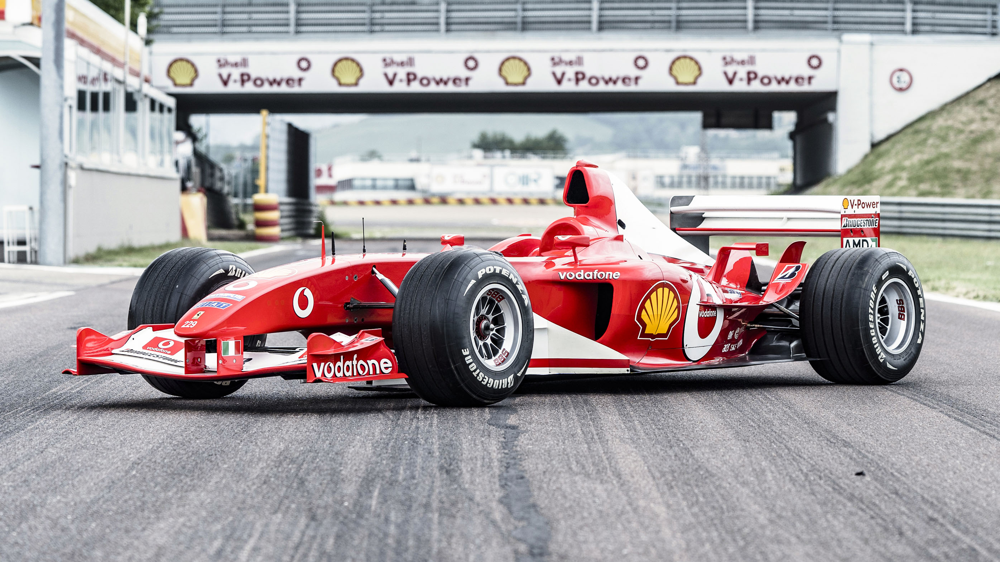

Scuderia Ferrari

The Prancing Horse
The Scuderia Ferrari Formula 1 team is the oldest in the sport. It is full of history and may of the greatest drivers have driven for them such as Micheal Schumacher, Lewis Hamilton, Sebasitan Vettel and many more. They have won 15 drivers championships and 16 constructors championships which is more than any other team.
The Tifosi
The Ferrari fans, or Tifosi, are some of the most loyal fans in motorsports. It's not just Italians that support them either but their enthusium and passion for the team has inspired fans across the world.
Being such a historic team, Ferrari attracts drivers, especially world champions. Micheal Schumacher and Fernando Alonso had 2 WDC before joining Ferrari, Sebastian Vettel had 4 and Kimi Raikkonen went back to Ferrari when he rejoined F1. Most recently Lewis Hamilton, 7-time world champion, became a driver for the Scuderia.